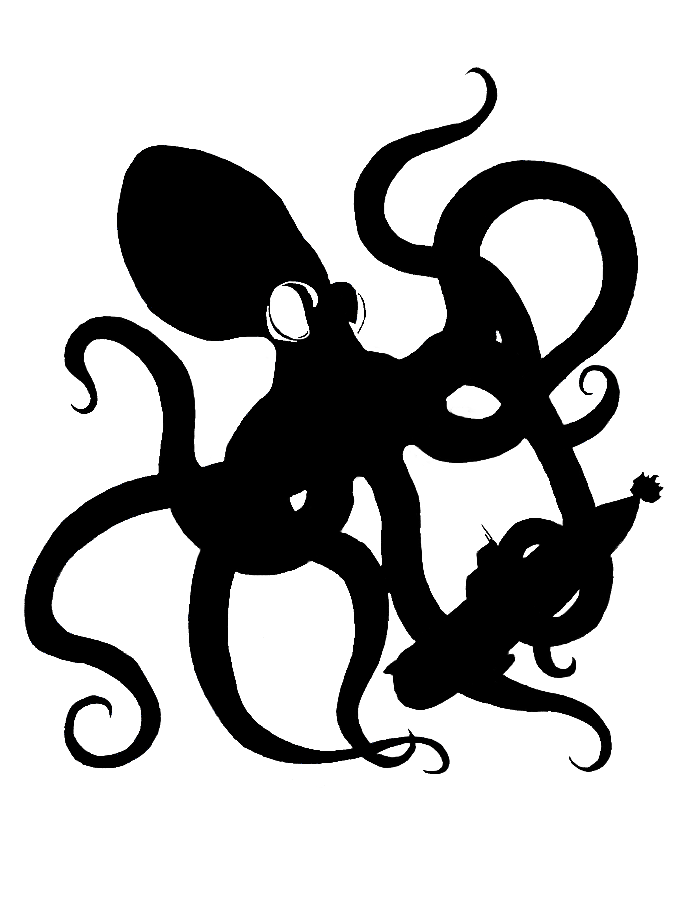
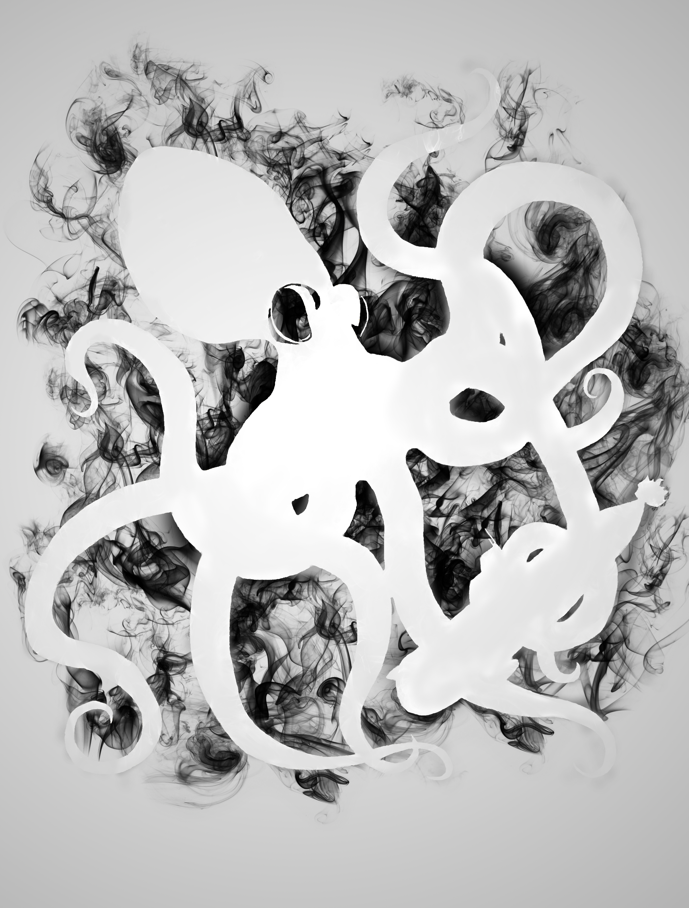

My name is Christopher Westman, and I'm a graphic designer and web developer.
This website is being used as a brief introduction to myself, and to showcase my skills pertaining to web design and development. Additionally, all of the graphic and illustration art throughout this website, aside from the images found on the “Sample” tab, are all made myself.
The button on the navigation bar, labelled "Website", displays a different style layout and graphic art. It's nothing special, but it shows that I can handle different types of work. The only buttons that work on that page are those located within the navigation menu.
As stated before, I have created all the art content on the main parts of this site. Additionally, I have designed and developed all the features and functionality. I’m proficient in HTML, CSS, and JavaScript, and have foundational knowledge and experience in many other web based languages, such as SQLite and PHP.
As for graphic design, web design, and art and illustration go, I can create logos, banners, custom typography, sales sheets, ads, and much more. I’m skilled in programs such as Photoshop, Illustrator, InDesign, and Sketchbook Pro. Technology and art are two of my biggest passions. To see a sample of my design art, visit my portfolio by clicking HERE!!! You can also look at my other, more general art right here!
I come from an eight-year military background, and have served in some of the most extreme roles. Throughout this stent, I have gained a tremendous amount of experience in team collaboration, project management, and operations and logistics. Combining those skills with the ones I have most recently acquired, I can take on many tasks, wear many hats, and grow a strong team while doing so.
I'm excited to see where this all takes me. There's never a dull moment in this industry and I intend on pushing myself to the limits.
